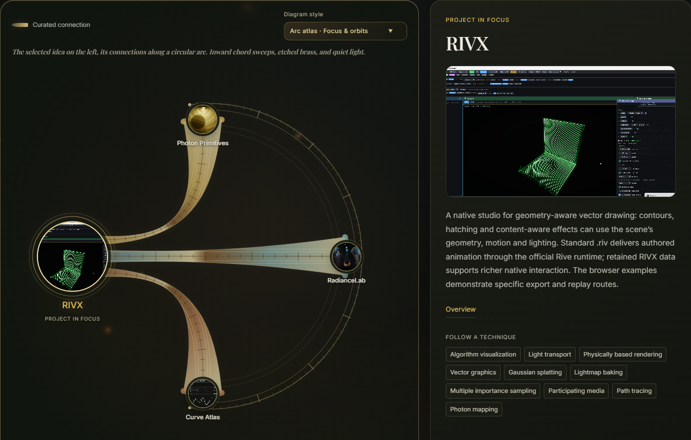
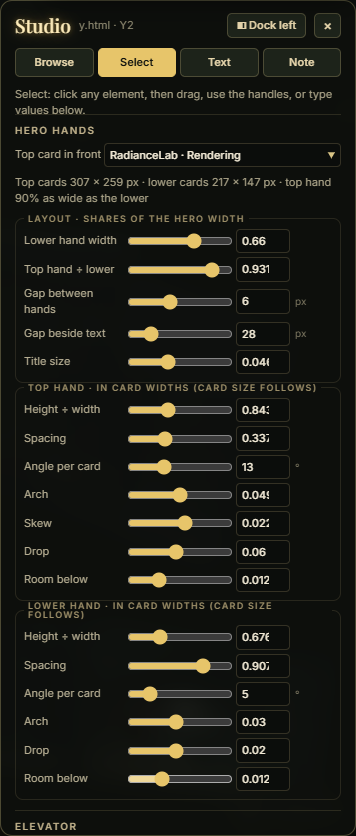

An interactive atlas of my work
A portfolio for following ideas, trying computational experiments, and choosing how deeply to explore. The interface connects the collection; the publishing tools help me keep it coherent.

Follow an idea, not just a project
A list of projects hides how the work developed. The connection explorer offers two routes: authored relationships explain why two projects belong together, while shared techniques reveal common methods across different fields. Domains, algorithms, platforms and languages have distinct roles in the vocabulary.
Choose RIVX, follow its connection to RadianceLab, then inspect a shared technique. The focus, neighboring projects and reading path change together. Project links have written explanations; shared techniques come from the catalog.
Even the portfolio is performance aware
A technical brochure can contain GPU rendering, simulation and interactive diagrams. Loading every experiment at once would make them compete for CPU and GPU time. Live panels start when you interact with them, pause when they leave view, and resume when you return.
Scrolling past a panel does not automatically start it. Pointer interaction after navigation settles, keyboard focus or Run signals intent; leaving the vertical viewing range suspends it. Manual Pause stays in effect. A focused popout suspends the surrounding brochure demos, and an activity inspector makes the host’s live-demo state visible.
The host and embedded demos cooperate through visibility messages. This manages integrated experiments; it is not a guarantee that arbitrary embedded code stops all background work.
- WaitingA preview, without starting the experiment
- InteractivePointer intent, keyboard focus, or Run
- SuspendedOutside the view; return and interact to resume
Edit the collection where it is read
The authoring build includes text and explanation editors, review comments, and a visual Studio for composing homepage layouts. I can review several projects in context, retain drafts across pages, and export a batch for incorporation into the published site.
Project text drafts save automatically; comments use Save. Drafts belong to this browser and site address. Review and project-copy exports span projects, while Studio exports its current homepage variant and shared design settings. Exported drafts still need to be applied to the source: this is a local editorial workflow, not cloud collaboration or instant publishing.
Inside the authoring Studio · interface capture

One visual language. Several reading depths.
A visitor can start with a composed preview, open a short overview, or continue into a technical brochure and working application. The elevator navigation, luminous borders, diagrams and project imagery make those transitions feel like parts of the same place.
A structured catalog and generation scripts keep project records, links and page structure connected. The published site remains static HTML, CSS and JavaScript. The design challenge is editorial as much as technical: show a compelling result quickly, make the first action clear, and keep the deeper evidence within reach.
A short case study of the site you are using · September 2026.